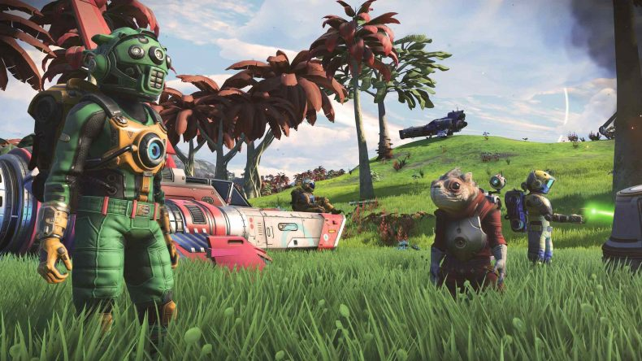
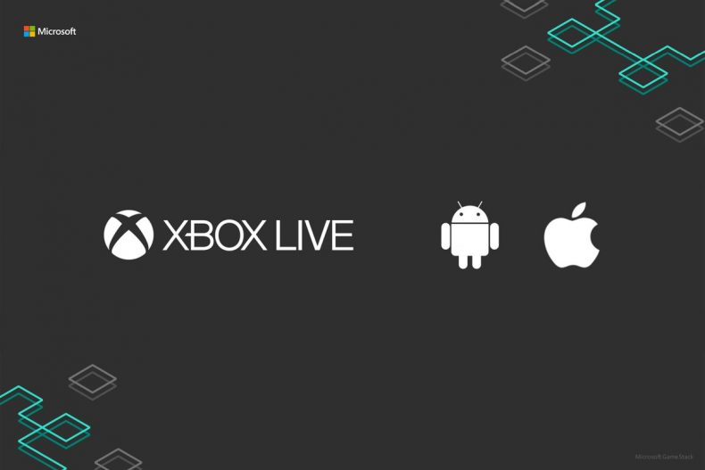
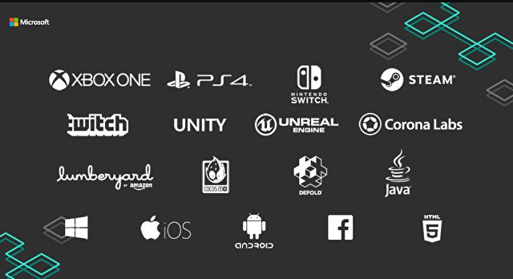

Microsoft se asocia con Gameye para mejorar los multijugador de Xbox Game Studios:
Microsoft está decidida a mejorar los juegos multijugador de Xbox Game Studios. Y para lograrlo ha decidido asociarse con Gameye, compañía alemana afincada en Rotterdam y cuya principal función consiste en ofrecer una infraestructura mejorada para los juegos multijugador de Xbox Game Studios. Estructura de la que Microsoft se beneficiará, tal y como ha desvelado el medio Windows Central. El sistema de Gameye se unirá a Microsoft Azure para ofrecer a los estudios desarrolladores de Microsoft las herramientas necesarias para permitir un multijugador de baja latencia y competitivo, en todos sus juegos. Esta sorpresa se añade a la que os desvelamos ayer mismo: la llegada de Xbox Live a Android e iOS y las mejoras que traerá Gamestack al desarrollo de juegos.
“A través de esta colaboración, Gameye trabajará con Microsoft Azure para ofrecer al mercado un multijugador a la última, una solución que mejore los servidores y una herramienta que eleve el jugador competitivo a nuevos niveles de conectividad y estabilidad.
Estamos encantados de que un líder de la industria, tan visionario e icónico como Microsofto, haya reconocido nuestro trabajo y haya apostado por lo que nuestra tecnología puede aportar a sus juegos. Nuestra API es la más rápida y más avanzada que la industria ha visto hasta ahora. Y, con Microsoft, nos convertiremos en la marca líder de la industria en servidores de tecnología”, ha comentado el CEO de Gameye, Sebastiaan Heijne, en un comunicado de prensa.
A través de esta asociación, Microsoft quiere ofrecer a sus jugadores el acceso a una network con los servidores con menor latencia. Y así acabar con los problemas de lag y garantizar a sus usuarios las respuestas más competitivas posibles. Aparentemente, Gameye ofrecerá servidores en cinco segundos a nivel mundial. Y cada contenedor se escalará en función de las necesidades de los juegos. Sin duda, la asociación con Gameye para mejorar los juegos multijugador de Xbox Game Studios es un gran avance de Microsoft.
Sean Murray anticipa un “pequeño anuncio” sobre No Man’s Sky.

Sean Murray puede que sea uno de los creativos más activos y carismáticos de las redes sociales, lo que en más de una ocasión le ha valido críticas y elogios a partes iguales. El director de Hello Games, creadores de No Man’s Sky, ha tomado Twitter para preparar el terreno para un “pequeño anuncio” relacionado con su juego de exploración interespacial.En concreto, Murray, fiel a su política de “por lo general, decimos lo menos posible y nos enfocamos en hacer cosas para que jueguen las personas … pero esto estaba a punto de filtrarse”, ha retuiteado un mensaje del año pasado donde el estudio anticipaba un “pequeño anuncio” para No Man’s Sky.
Xbox Live llega a iOS y Android, pero todavía no a Switch:

Tras unas semanas en las que la relación entre Xbox One y Nintendo Switch parecía estrecharse, la realidad es que esta opción parece que se aleja. Al menos no se descarta, que es un paso importante en la expansión de Microsoft para ofrecer juegos y servicios a través de todos los dispositivos. Sabiendo que xCloud contará con beta este mismo año, la expansión de Microsoft comienza por desarrollar herramientas para que los desarrolladores puedan implicarse más. Estando en marcha la GDC19, Microsoft ha presentado una serie de herramientas que darán acceso directo a las desarrolladoras a vincular sus proyectos con Xbox Live a iOS y Android.

Con estas herramientas van a facilitar los recursos necesarios para que elementos como los logros, puntuación de jugador, listas de amigos, el entorno familiar y medidas de seguridad de Xbox Live, sean llevadas a esos desarrollos. Desde Microsoft, el CVP Karim Choudhry, ha comentado que “estamos uniendo esas comunidades, junto con una experiencia consistente, singular para todos los jugadores”. En cuanto a estas herramientas, explica que “están haciendo que la disposición de los desarrolladores con nuestro nuevo SDK para los desarrolladores móviles, que está disponible para iOS y Android”. En estas se podrán ingresar esas características tan queridas de la plataforma Xbox Live.
“Todas esas características se pondrán a disposición de los desarrolladores de juegos móviles, ya sea que estén en busca de toda la experiencia que ofrecemos en Minecraft, o solitario, sino también características independientes como logros o puntuación de jugador”, añade Choudhry. Para ello define Xbox Trusted Identity, que es una red compatible con el login, la privacidad y seguridad en linea de Xbox Live. “Nuestro objetivo es unir a los dos mil millones de jugadores,” afirma Choudhry. “Pero nosotros no tenemos anuncios específicos en lo que respecta al cambio hoy mismo”. Choudhry cree que el nuevo SDK será mucho más fácil de operar que el SDK de Windows que los desarrolladores habían utilizado anteriormente. “Realmente creo que tenemos una oferta atractiva con lo que ofrece Xbox Live en términos de comunidad”.
Ahora la cuestión es el motivo de demorar su llegada a Nintendo Switch. En los planes de Microsoft no solo parece estar la expansión a las consolas de Nintendo. Su plan va más allá si atendemos a la siguiente imagen con los logotipos de Steam y Playstation 4 como sorpresas más reseñables. Este es otro de los descubrimientos realizados por Microsoft en el entorno de juego, el Game Stack.